Jazz & Recording Technology
From the first jazz record in 1917 to the electric fusion experiments of the 1970s, jazz and recording technology grew up together. Each era — acoustic horn, ribbon microphone, long-playing record, magnetic tape, Fender Rhodes and synthesizer — changed how jazz was captured and how it sounded.
Swing to Fusion
Follow the style from Louis Armstrong and Duke Ellington, through bebop and Miles Davis, to Herbie Hancock and Weather Report.
Horn, Ribbon Mic & Tape
Acoustic horn recording, the RCA ribbon microphone, the 33⅓ rpm LP, tape splicing and the Rudy Van Gelder close-mic sound.
Swing, Improvisation & Harmony
Swung rhythm, walking bass, improvised solos over chord changes, extended chords, the 32-bar AABA form and odd time signatures like 5/4.
Component 3 Syllabus Matrix for Jazz
Edexcel expects you to link recording technology to the sound you hear and to place each jazz style in its musical and historical context.
Recording, Microphones & Studio
- Acoustic era (1917–25): performers play into a horn that cuts a wax disc directly.
- Electrical era: microphones, including RCA ribbon mics with a figure-8 pattern.
- Formats: 78 rpm shellac (about 3–4 minutes) to the 33⅓ rpm LP (up to about 22 minutes a side).
- Tape: allows editing, splicing and later multitrack layering.
- Fusion: electric piano, synthesizers, electric bass, effects and tape editing.
Styles, Features & Influence
- Rhythm: swing feel, syncopation, walking bass, ride-cymbal pattern.
- Harmony & melody: extended 7th/9th chords, blue notes, ii–V–I, modes.
- Improvisation: head – solos – head structure, often over a 12 bar or 32-bar AABA form.
- Styles: early jazz, swing, bebop, cool/modal, hard bop, fusion.
- Key labels: Blue Note, Columbia, Impulse!.
First Jazz Records & Playing Into a Horn
The first jazz record was made in 1917 by the Original Dixieland Jass Band. Before microphones, the band played into a large horn that vibrated a cutting stylus.
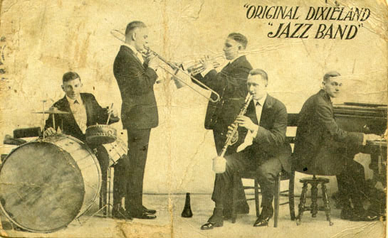
Original Dixieland Jass Band (1917)
Recorded for Victor in New York in 1917, this white New Orleans-style band made what is usually called the first jazz record. Early New Orleans jazz used collective improvisation by trumpet/cornet, clarinet and trombone.
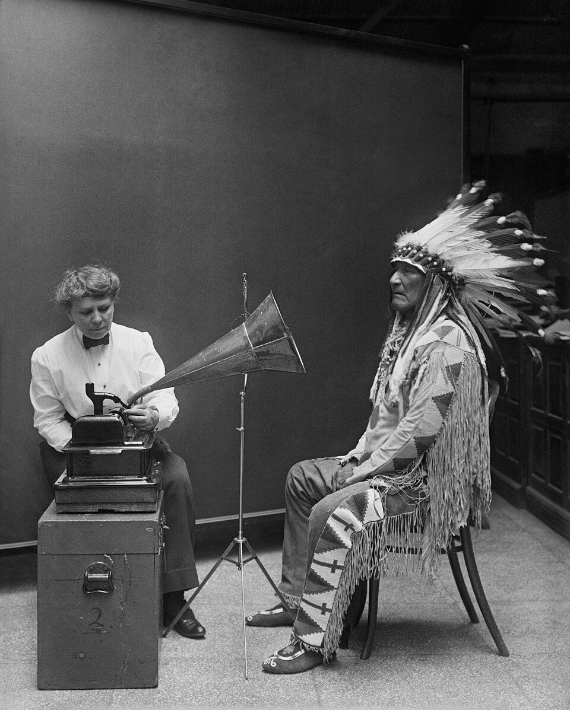
Recording Through a Horn
In acoustic recording (shown here in a 1916 session) sound waves travelled down a horn onto a diaphragm and stylus. Performers had to be placed by loudness; quiet instruments went close, loud ones further away. Bass drums were avoided because they made the stylus jump, and a tuba often replaced the double bass.
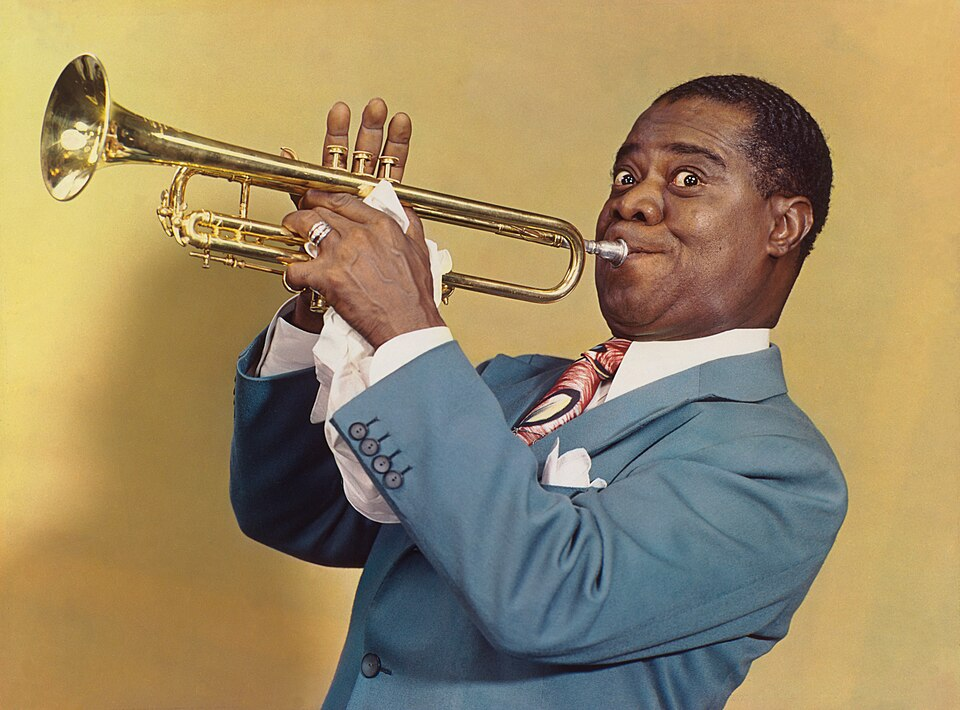
Louis Armstrong
His Hot Five and Hot Seven recordings (1925–28) put the improvised solo at the centre of jazz. They were made just as electrical recording arrived, giving a fuller sound.
Electrical Recording, Ribbon Mics & the 78
From 1925 microphones replaced the horn. Sound quality, frequency range and balance all improved, but each side of a 78 rpm disc was still only a few minutes long.
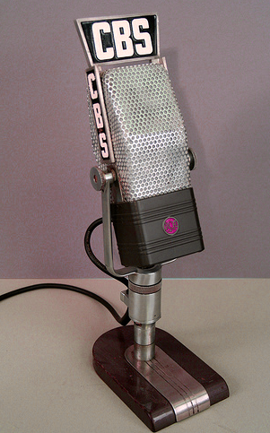
The RCA Ribbon Microphone
A thin metal ribbon moves in a magnetic field. RCA’s 44 (1931) and 77 were smooth, warm and gave a figure-8 (bidirectional) pick-up pattern, so two horn players could face each other at either side of one microphone.
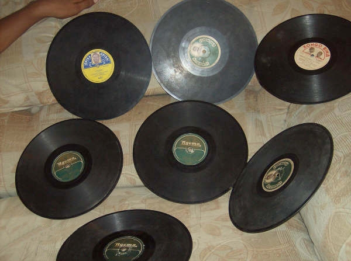
The 78 rpm Disc
Brittle shellac discs held roughly 3–4 minutes per side. Swing bands arranged and edited their tunes to fit, which is why many classic swing records are around three minutes long.
Natural Balance in a Big Room
Big bands were often recorded live in large, acoustically rich rooms with very few microphones. Balance came from where players sat and arrangement, not from a mixing desk — there was no multitrack to fix things later.
Big Bands: Ellington, Goodman & Basie
Swing was dance music played by big bands of brass, saxophones and a rhythm section, built on sectional riffs and call and response.
Duke Ellington
Pianist, bandleader and composer. Radio broadcasts from the Cotton Club made his band famous, and he composed with the 3-minute 78 rpm side in mind. Hits include Mood Indigo and Take the “A” Train.
Benny Goodman
The “King of Swing” brought swing to a wide white audience; his 1938 Carnegie Hall concert is a landmark. Clarinet solos sit over a tight band that answers in call and response.
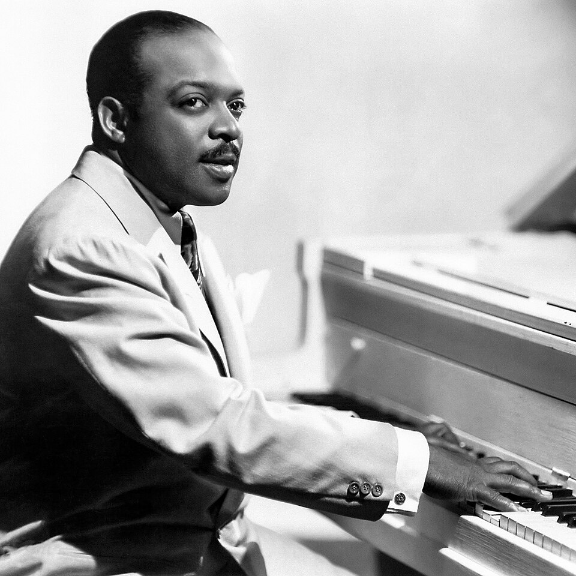
Count Basie
Led a hard-swinging Kansas City band with a light, walking bass and spare piano, plus simple riff-based arrangements. A model of the swing rhythm section.
Bebop: Fast, Complex & Small Group
In the 1940s younger players moved away from dance-band swing towards fast, virtuosic music for listening, played by small combos.
Charlie Parker
Alto saxophonist and a leading bebop innovator. Played very fast, melodic solos over complex chord changes, using extended notes of the chords.
Dizzy Gillespie
Trumpeter and composer. With Parker he developed fast tempos, altered and extended chords and tightly arranged heads followed by long improvisations.
Thelonious Monk
Pianist and composer with angular melodies, dissonant harmony and unexpected silences — very distinctive and influential.
Tech link: a 1942–44 musicians’ recording ban meant much early bebop development went unrecorded.
The LP, Magnetic Tape & Kind of Blue
The long-playing record and magnetic tape changed jazz: longer performances could be released, and the best takes could be edited together.
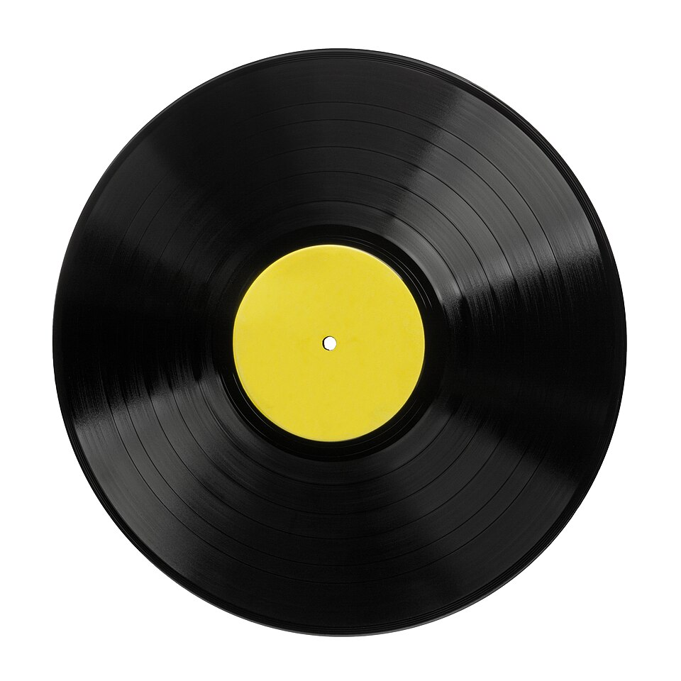
The 33⅓ rpm LP (1948)
Columbia’s microgroove LP allowed up to about 22 minutes per side (compared with 3–4 minutes on a 78). Extended solos and album-length ideas became possible.
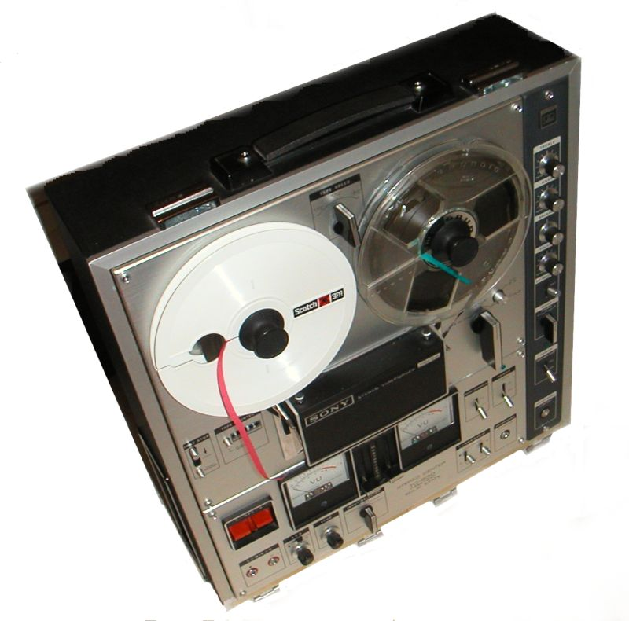
Magnetic Tape
Tape allowed editing and splicing between takes, longer continuous recording and, later, stereo and multitrack. Jazz studios could now balance and polish recordings.
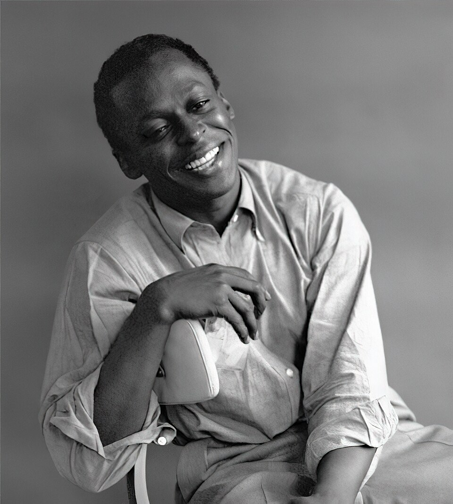
Miles Davis: Kind of Blue (1959)
Recorded in Columbia’s 30th Street Studio, New York. So What is modal — improvisation on scales (D Dorian) rather than fast chord changes — in a 32-bar AABA form.
Blue Note & Rudy Van Gelder’s Sound
Engineer Rudy Van Gelder recorded hundreds of classic jazz albums, first in his parents’ living room in Hackensack and from 1959 in a purpose-built studio in Englewood Cliffs.
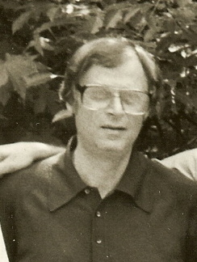
Rudy Van Gelder
Known for close-miking horns, a punchy piano and clear upright bass. The result is intimate, dry, present and very clear, with the band playing live together.
Blue Note Records
Founded in 1939 by Alfred Lion and Francis Wolff. Its artists, such as John Coltrane (Blue Train) and Herbie Hancock (Maiden Voyage), recorded with Van Gelder, giving the label a recognisable sound.
Tube Condensers & Tape
Van Gelder is closely associated with the Neumann U47 tube condenser microphone, close to the instruments, and recorded to tape. Natural bleed between bass, piano and drums gave the glue of a live band.
Coltrane, Brubeck & Pushing the Rules
Jazz explored faster chord changes and unusual metres while remaining accessible to wider audiences.
John Coltrane: Giant Steps (1960)
The title track moves through keys a major third apart at speed, creating very demanding chord changes for improvisers. Later he moved towards modal and spiritual music (A Love Supreme, 1965).
Dave Brubeck: Take Five (1959)
Written by saxophonist Paul Desmond and recorded by the Dave Brubeck Quartet, it is in 5/4 time with a repeated two-chord vamp, and became a big hit single.
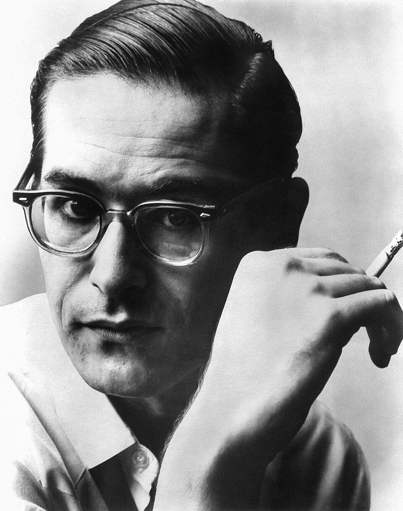
Bill Evans
Pianist on Kind of Blue, known for a lyrical touch and rich, extended jazz chords — a model for modern jazz piano voicings.
Typical Jazz Recording Setup
In listening questions, describe the instrument, the likely microphone approach and the resulting sound.
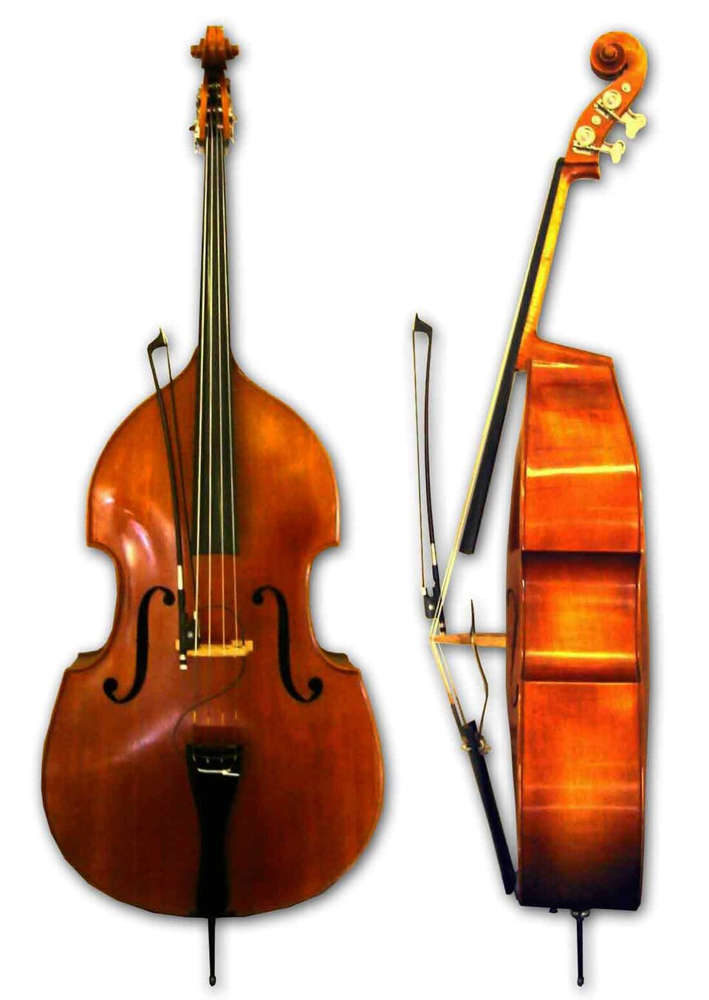
Upright Double Bass
Often a large-diaphragm condenser or ribbon near the bridge, sometimes blended with a mic a few feet back for body. Light compression to preserve touch and dynamics.
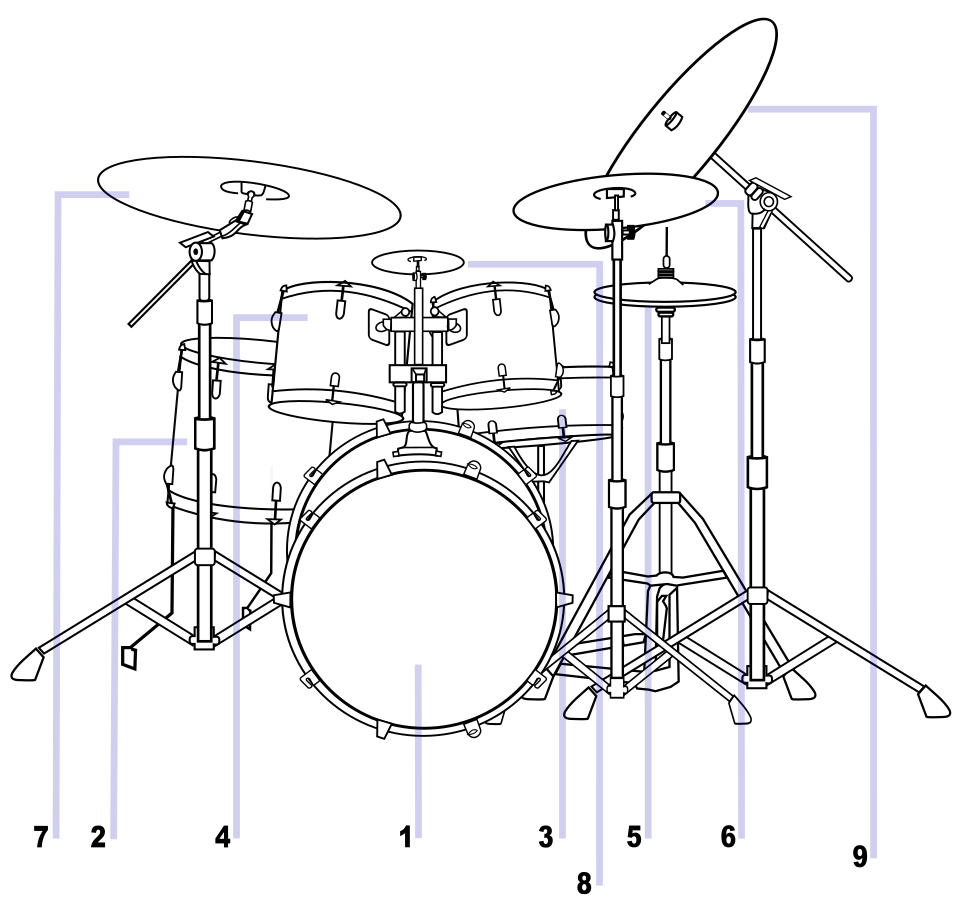
Drums
A simple 2–3 microphone setup, such as a stereo overhead pair plus a kick mic, captures the whole kit with natural cymbal sparkle and open dynamics.
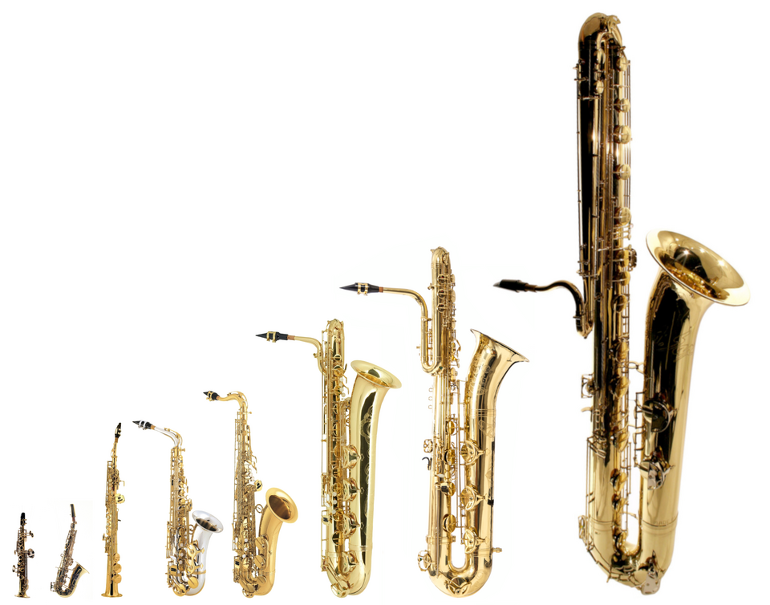
Saxophone
Tube condenser or ribbon microphones placed slightly off-axis to smooth harsh high frequencies and avoid breath blasts.

Trumpet
Ribbon or condenser microphones set back a little because trumpets are loud and bright; ribbons help tame the top end.
Jazz Fusion: Electric Miles
In the late 1960s Miles Davis combined jazz improvisation with rock rhythms and electric instruments, and treated the studio itself as an instrument.
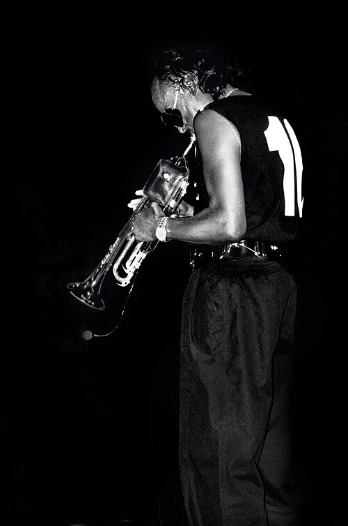
Miles Davis: Bitches Brew (1970)
Recorded in 1969 with a large electric band. Long jam sessions were later edited and assembled, using loops, echo and tape splices.
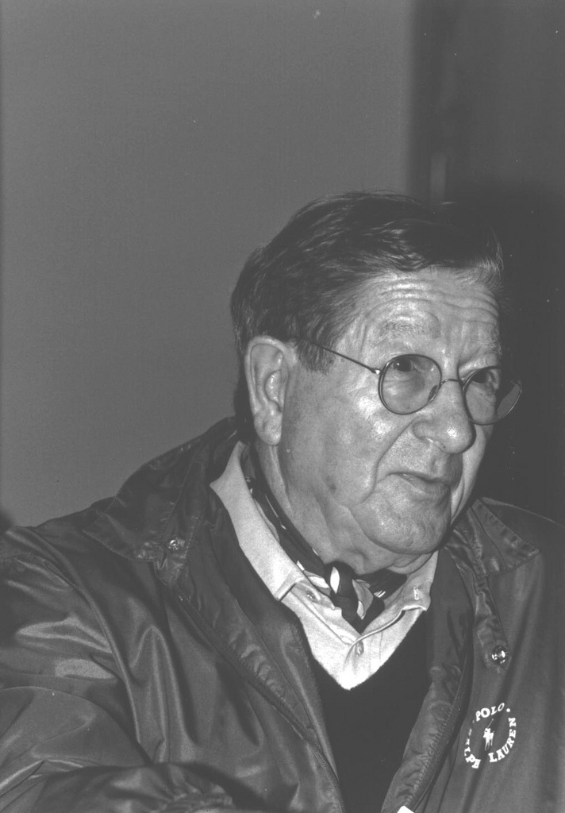
Teo Macero, Producer
Miles’s long-time Columbia producer. He pioneered radical tape splicing, looping and editing on records such as In a Silent Way and Bitches Brew.
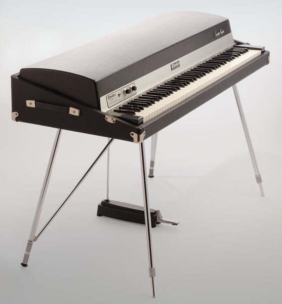
The Fender Rhodes
The electric piano replaced the acoustic grand in fusion. Its bell-like tone could be plugged straight in, giving a warm, sustained sound that sits well with electric bass and rock drums.
Fusion Groups & Synthesizers
Fusion bands added synthesizers, electric bass and rock drum production to jazz harmony and improvisation.
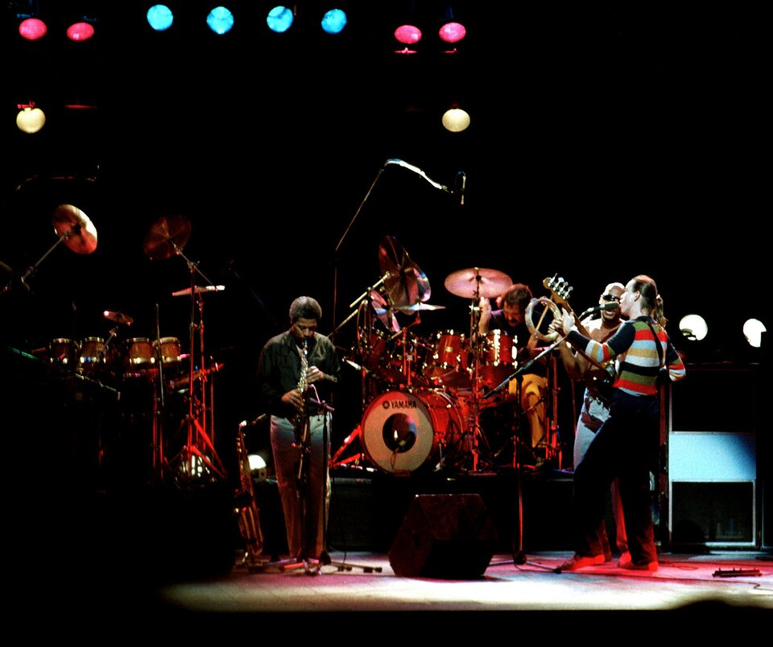
Weather Report
Led by Joe Zawinul and Wayne Shorter. Mixed jazz improvisation with synthesizers, electric bass and world-music colours.
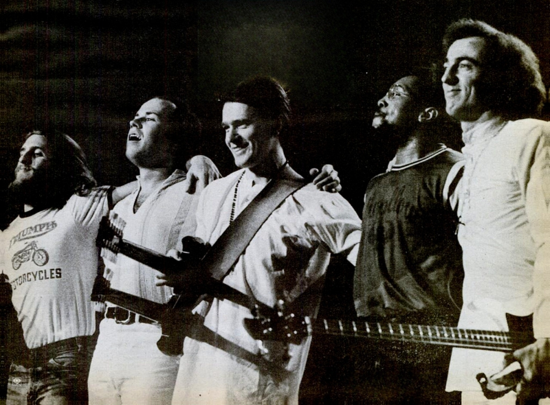
Mahavishnu Orchestra
Guitarist John McLaughlin’s loud, high-energy band fused jazz with rock, using electric guitar distortion and complex rhythms. Return to Forever worked in a similar fusion style.
Herbie Hancock
Moved from acoustic jazz to funk-influenced fusion with keyboards. Head Hunters (1973) used synthesizers such as the ARP Odyssey and Minimoog.
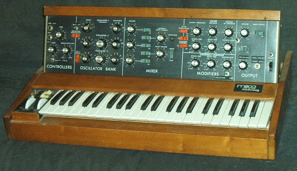
Minimoog & ARP Odyssey
Compact monophonic synthesizers let keyboardists play expressive lead and bass lines. Pitch and mod wheels let them “bend” notes like a horn player.
Comparison: Swing • Blue Note • Fusion
In longer comparison answers contrast the recording technology and the musical result.
| Feature | Swing era (1930s–40s) | Blue Note hard bop (1950s–60s) | Fusion (1969–70s) |
|---|---|---|---|
| Format | 78 rpm shellac, about 3 minutes a side. | 33⅓ rpm LP, mono then stereo. | Stereo LP, double albums. |
| Microphones & room | Few mics (ribbon/condenser) in a large, live room. | Close-miked tube condensers in a purpose-built studio. | Many mics, DI for electric instruments, studio effects. |
| Recording method | Live to disc/early tape; no editing. | Band plays live to tape; limited editing. | Multitrack, tape splicing, loops, echo. |
| Instruments | Big band brass, saxes, acoustic rhythm section. | Small combo: horns, piano, upright bass, drums. | Electric piano, synthesizers, electric bass and guitar. |
| Sound | Natural balance, ensemble blend. | Intimate, punchy, clear, natural bleed. | Layered, processed, rock-influenced. |
Musical Features & Exam Quick Reference
Keep these musical features and technology terms ready for listening questions.
Musical Features
Rhythm: swing feel, syncopation.
Bass: walking bass line.
Harmony: 7th/9th and extended chords, ii–V–I.
Melody: blue notes, improvised solos.
Structure: head – solos – head; 12 bar or 32-bar AABA.
Texture: call and response.
Technology
1917–25: acoustic horn.
1925+: mics, ribbon mic (figure-8).
78 rpm: about 3–4 minutes.
1948: 33⅓ rpm LP.
Tape: splicing, stereo, multitrack.
Fusion: Rhodes, synths, effects.
Key Names
Early/Swing: Armstrong, Ellington, Goodman, Basie.
Bebop: Parker, Gillespie, Monk.
Modern: Davis, Coltrane, Brubeck, Evans.
Producer/engineer: Rudy Van Gelder, Teo Macero.
Fusion: Hancock, Weather Report.